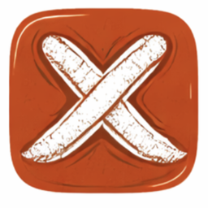

Now in beta
The Local Crux
Find local climbing partners with compatible skill, style, and schedule — not a dating app, not a marketplace, just climbers.
Instant, no waitlist. Tap through and follow the prompts to install.
1. Join the tester group with your Google account.
2. Opt in and install — not the regular Play Store page.
You may see a few "no permission" messages while joining the group — that's normal, keep tapping through until you see "Join group." Once joined, tap Download on Android to install.
Matching weighs shared styles, grade, availability, and belay compatibility — the things that actually make a good climbing partner.
A live community map and gym check-ins — know who's around and ready to climb, right now.
Real blocking, reporting reviewed by a real moderator, and clear guidelines — this app exists to find belay partners, not dates.
Build trust after every session — ratings help the whole community find partners worth climbing with again.
Post a gym and a time, and other climbers can join in — coordinate the session in a comment thread before you even arrive.
Events, meetups, gym deals, and brand deals — a community board for everything happening beyond the app itself.
Don't see yours listed? Request it right from the gym map — real gyms get added, reviewed by a real person.